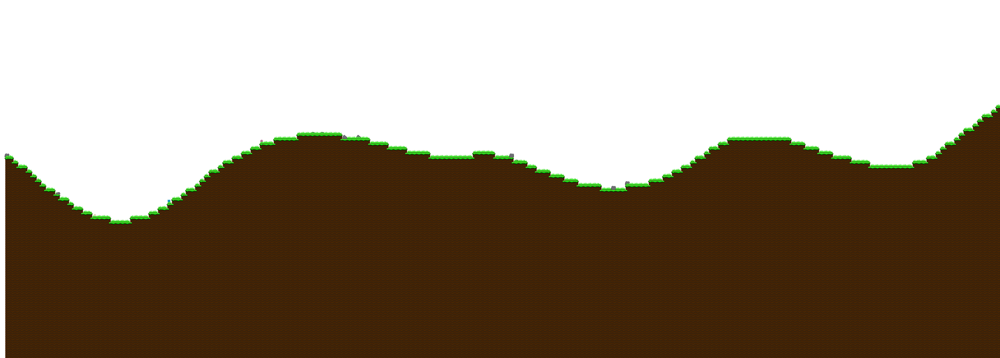
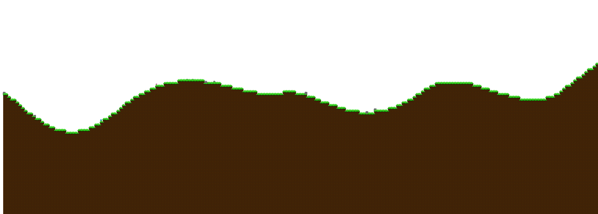

Arvopia!
Pick a version, any version!

Arvopia - Full versions
Arvopia 0.6 - The Enviornmental Update
Arvopia 0.6 is a great life-giving update with NPCs, Life cycles, and a lot of minor details that bring out life with this update. It was a joy to make and the wait might be worth it with this 6-month-late update. Another out-of-game feature with this update is that the file size has been reduced to 17 MB! This is the least space taking update since 0.3.
Arvopia 0.5 - Foilage Update
Arvopia 0.5 created a world filled with plants and life, where trees are growing and grass is taller! This version added a 3rd world to explore as well as more out of the worlds to enjoy! Arvopia 0.5 also added a method of crafting, which might be built apon. Play this version only after you've played 0.4, otherwise it might not boot up. The link is to drive file as the file is over a 100mb limit.
Arvopia 0.4 - Light Update
Arvopia 0.4 brought up a new way to change the game. It added an enviornment with a sky, wind, enemies as cannibals. It also brought up the concept of weapons, and how that would work. This is also the update where Arvopia officially earned it's name. This is also the update that added a full menu with an original soundtrack. This update also added a second world that the player could explore.
Arvopia 0.3 - Game Quality Update
Arvopia 0.3 was a great update that completely changed the game. It started out by enlargening the available world by almost 5 times it's size! It also reduced the lag spike glitch in the last update, as well as broadened apon bridges, foxes, and the previous particles system. This update added a major feature that would definitely play a role in the future, and that is it added combat.
Arvopia 0.2 - Foxes forever
Arvopia 0.2 was a nice easy fun update. It added many important elements that would be added apon. Some of these elements included foxes, clouds, particles, a gui, and also bridges. There was always one thing wrong with this update, and that was that it would hit a lag spike every 2 seconds. Play at your own risk of sanity.
Arvopia 0.1 - The beginning
Arvopia 0.1 was the first breakthrough with this game. This version features basic physics, butterflies, bees, flowers, rocks, player, and a basic grass and tree tileset.

 
